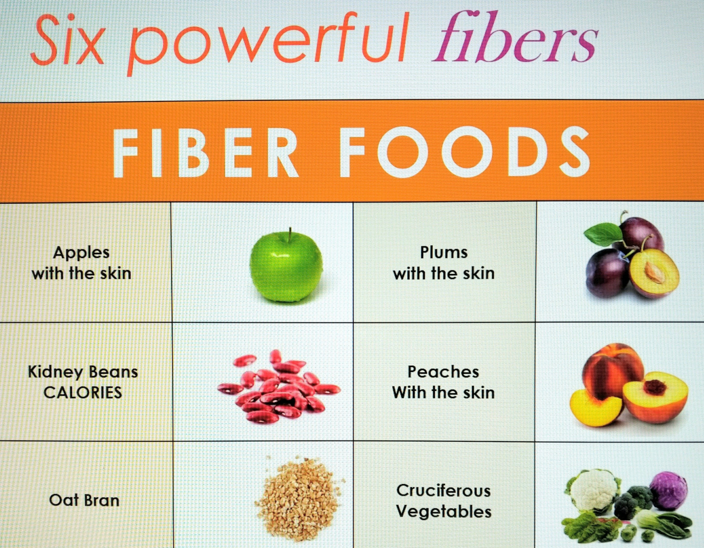

The US Preventive Services Task Force (USPSTF) has backtracked on low-dose aspirin for the prevention of colorectal cancer (CRC), stating in new guidance that the evidence is too murky to make a recommendation either for or against it.
The group dialed back from its 2016 recommendation because new findings from a handful of trials meant that the evidence is now "unclear whether aspirin use reduces the risk of CRC cancer incidence or mortality."
Maybe they should look at this chart instead, or listen to my lecture "An Aspirin a Day May Send a Doctor Your Way";
 Chart by Dr. Colin RossThe chart represents the 6 most powerful colon cancer fighting and colon cancer prevention foods. Aspirin was never on the list.